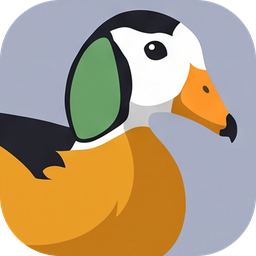
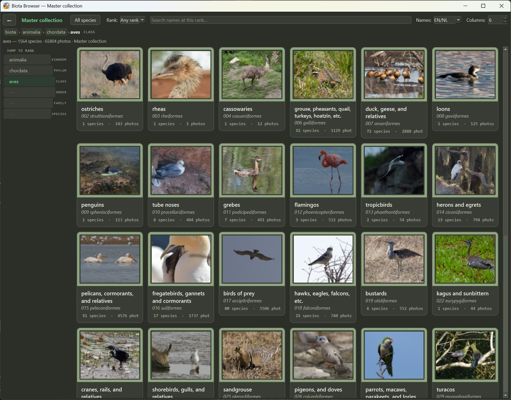
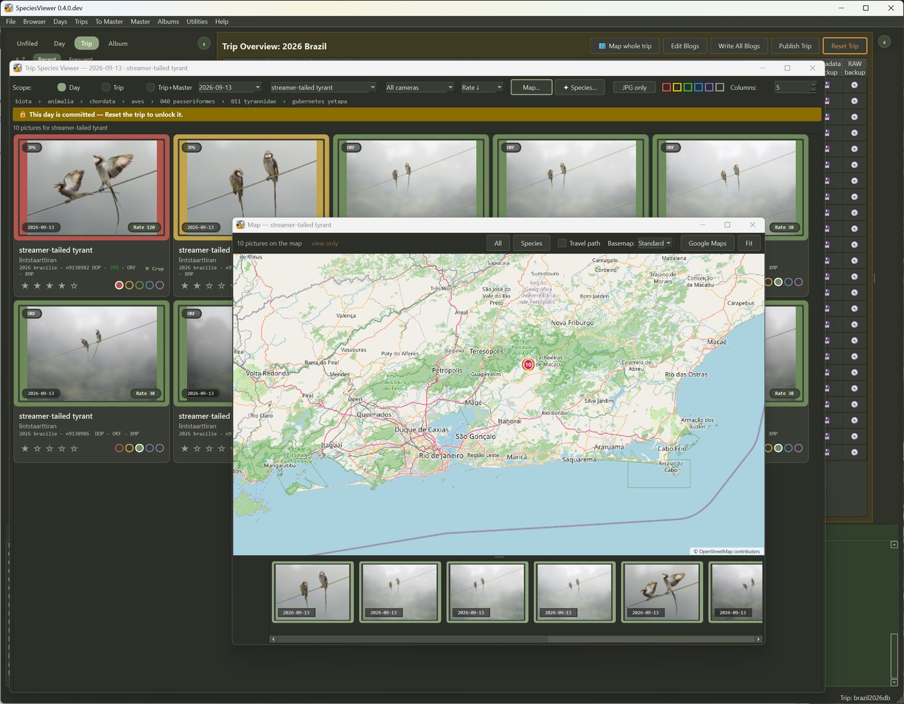
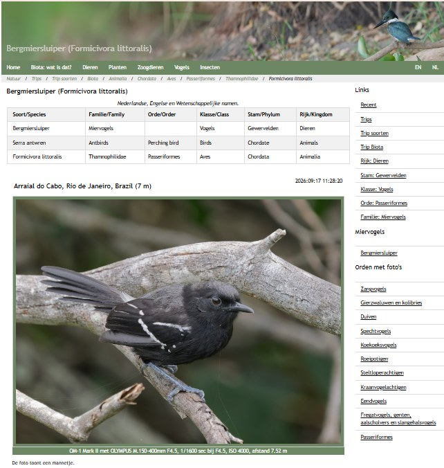

SpeciesViewer
Organize species. Explore collections. Bring biodiversity to life.
Beta · feedback welcome · sample pictures on the same page
SpeciesViewer is a desktop program for nature photographers who think in species, not in folders. It takes you from a full memory card to a lasting collection: cull and identify your pictures, keep the best of every species in one collection, write up your trips, and — if you want — publish it all as a website.
It works for birds, but just as well for plants, fungi, insects, dragonflies and mammals: every picture is tied to a species name, following the scientific classification, in English, Dutch or the scientific name.

What it does
- From card to keepers. Cull a trip of thousands of pictures with colour labels and ratings, and name the species in each — RAW, HEIC and JPG.
- On the map. Place every picture from a GPS track, from the position the camera recorded, or by hand.
- One collection that lasts. The best pictures of every species you have photographed, with date, place and rating. A better picture replaces a weaker one.
- Trips and albums. A page per day with a blog and the species seen; albums for a country, a season or a theme, without copying a picture.
- A website, if you want one — on your own server, or only on your computer.
- No database. Your collection is plain folders and files, so there is nothing to install and nothing to upgrade.
- Works with DxO PhotoLab, for edits, colour labels and high-quality JPGs. PhotoLab is not required.


See a website made with SpeciesViewer: Gilbert's nature photographs.
Free and open
SpeciesViewer is free software under the GNU General Public License, version 3. Questions, ideas and bug reports are welcome at speciesviewer@houtekamer.com.